Regression comparison
Download resultsAggregation weights
Coefficients can be negative and need not sum to one. Intervals describe coefficient uncertainty; the dashed reference is DE’s fixed 1/H weight.
BDKN
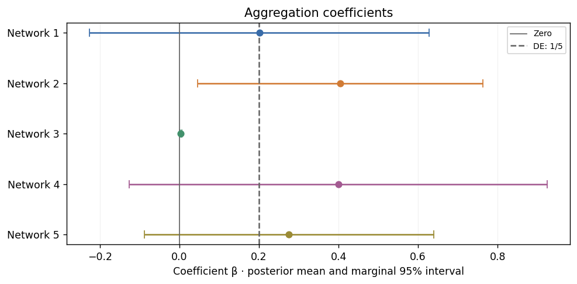
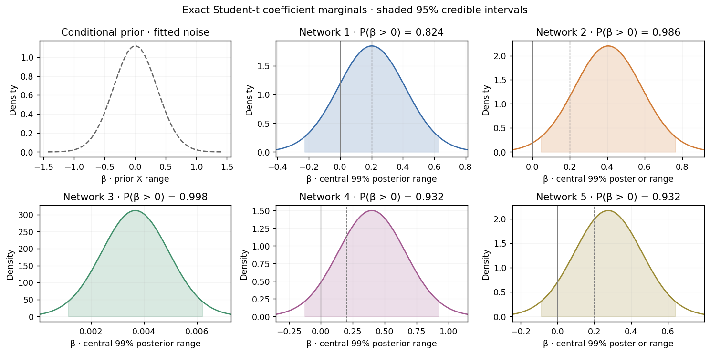
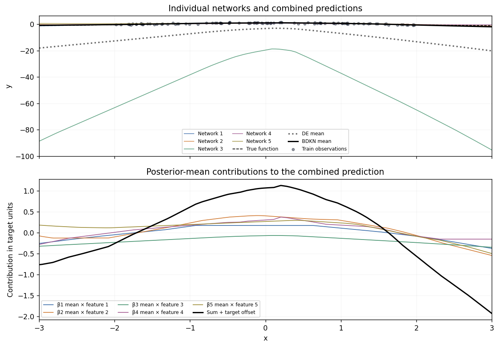
Each density panel uses its own X range for readability; coefficient intervals above share a common axis. Prior reference conditions on fitted noise. Contribution shares use held-out inputs; test targets are used only for scoring.
| Network | β mean | 95% low | 95% high | P(β > 0) | Contribution share | Test RMSE | Test NLL |
|---|---|---|---|---|---|---|---|
| 1 | 0.20134 | -0.22568 | 0.62836 | 0.82409 | 0.14712 | 0.36237 | 0.57209 |
| 2 | 0.40469 | 0.04597 | 0.76340 | 0.98629 | 0.24782 | 0.38493 | 0.55443 |
| 3 | 0.00367 | 0.00114 | 0.00620 | 0.99757 | 0.21160 | 56.20581 | 28.28065 |
| 4 | 0.39918 | -0.12669 | 0.92505 | 0.93239 | 0.17917 | 0.42924 | 0.66592 |
| 5 | 0.27555 | -0.08807 | 0.63917 | 0.93206 | 0.21428 | 0.65064 | 1.06990 |
Functional repulsion · BDKN
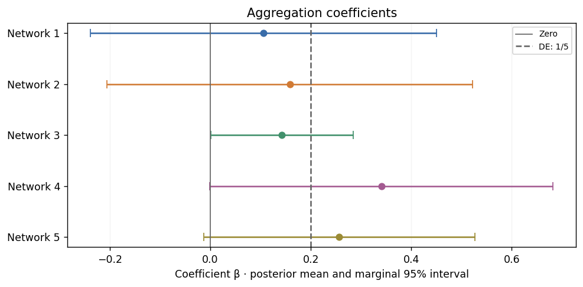
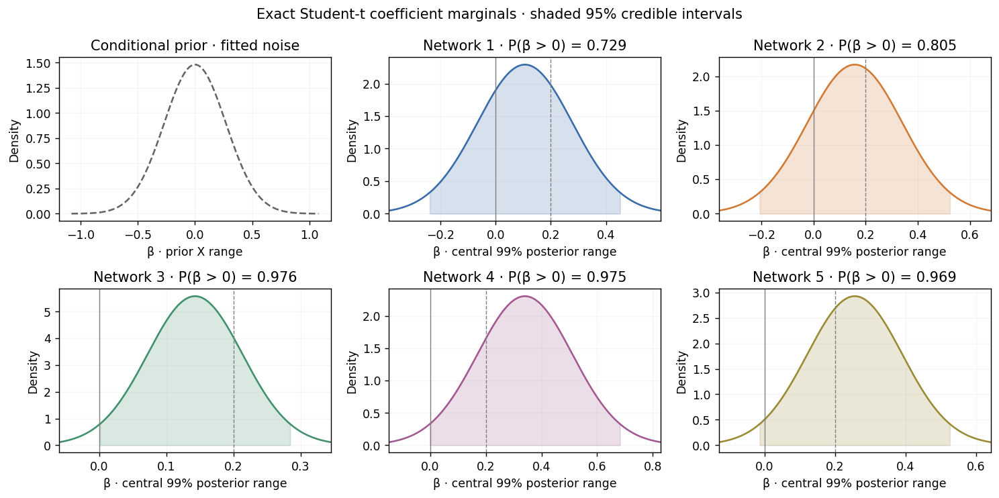
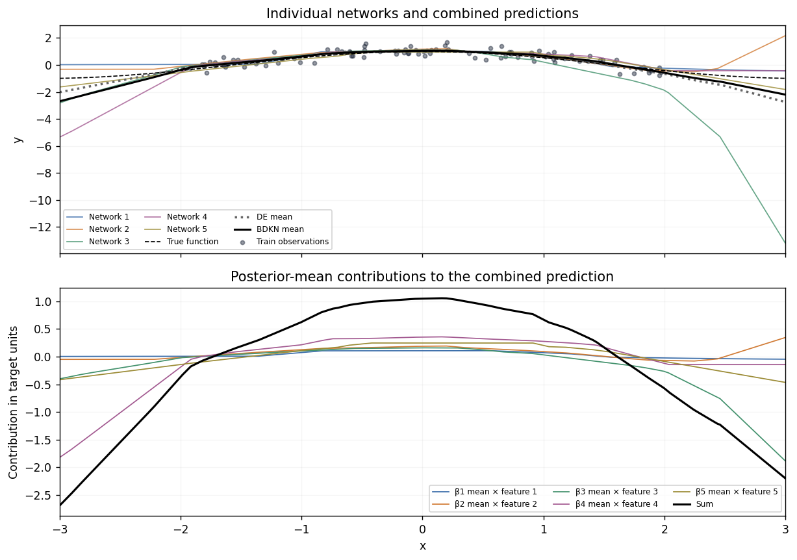
Each density panel uses its own X range for readability; coefficient intervals above share a common axis. Prior reference conditions on fitted noise. Contribution shares use held-out inputs; test targets are used only for scoring.
| Network | β mean | 95% low | 95% high | P(β > 0) | Contribution share | Test RMSE | Test NLL |
|---|---|---|---|---|---|---|---|
| 1 | 0.10622 | -0.23823 | 0.45067 | 0.72896 | 0.05106 | 0.48499 | 0.78717 |
| 2 | 0.15832 | -0.20545 | 0.52209 | 0.80503 | 0.10314 | 0.72483 | 15.70532 |
| 3 | 0.14259 | 0.00118 | 0.28399 | 0.97592 | 0.28607 | 2.79686 | 1.74637 |
| 4 | 0.34033 | -0.00136 | 0.68203 | 0.97455 | 0.35394 | 1.05248 | 0.96842 |
| 5 | 0.25642 | -0.01327 | 0.52611 | 0.96892 | 0.20579 | 0.38454 | 0.62571 |
Weight repulsion · BDKN
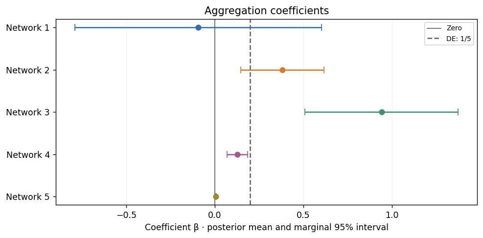
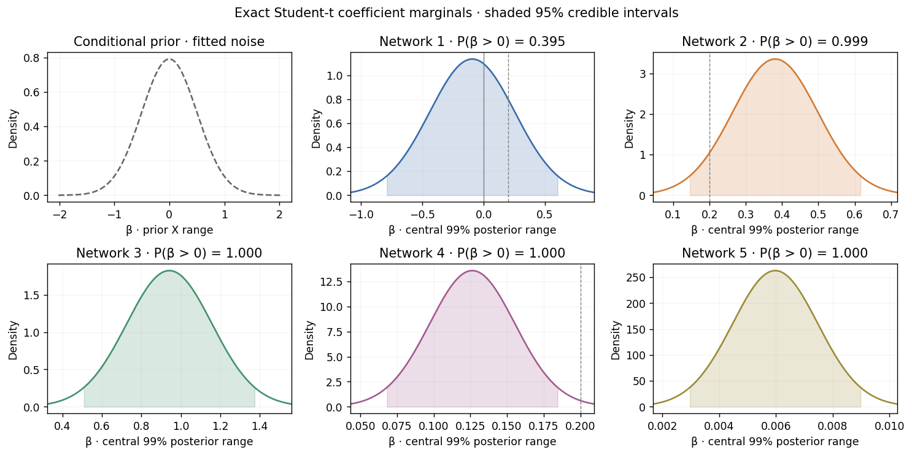
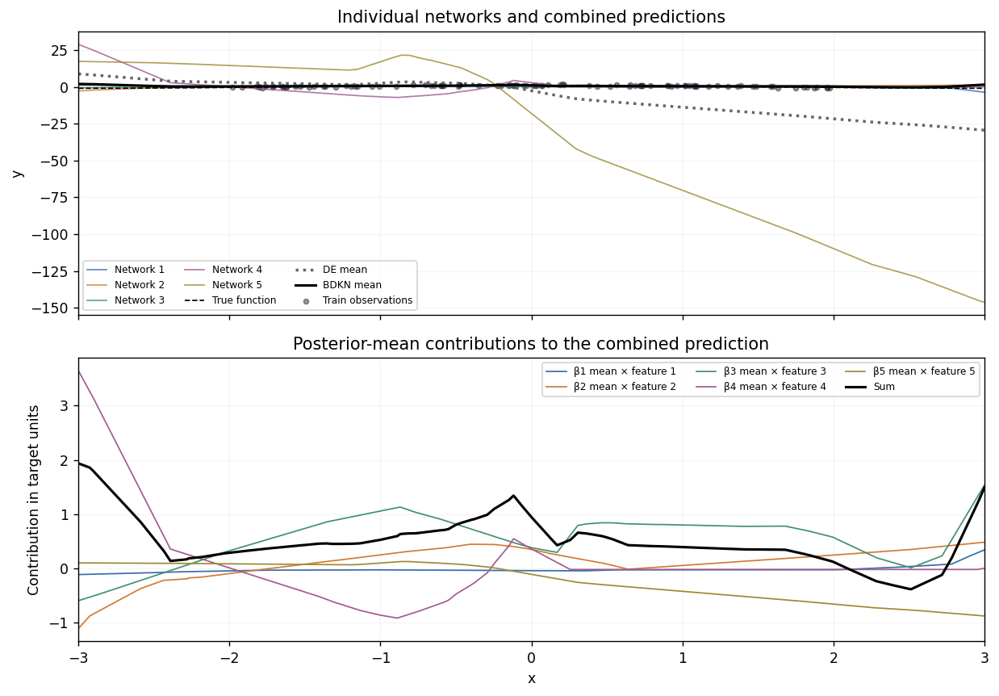
Each density panel uses its own X range for readability; coefficient intervals above share a common axis. Prior reference conditions on fitted noise. Contribution shares use held-out inputs; test targets are used only for scoring.
| Network | β mean | 95% low | 95% high | P(β > 0) | Contribution share | Test RMSE | Test NLL |
|---|---|---|---|---|---|---|---|
| 1 | -0.09343 | -0.78906 | 0.60219 | 0.39521 | 0.02685 | 0.86448 | 1.25057 |
| 2 | 0.38097 | 0.14582 | 0.61612 | 0.99912 | 0.15555 | 0.89825 | 1.15986 |
| 3 | 0.94167 | 0.50887 | 1.37448 | 0.99998 | 0.37944 | 0.81993 | 2.37935 |
| 4 | 0.12630 | 0.06814 | 0.18447 | 0.99998 | 0.23607 | 6.28625 | 2.29793 |
| 5 | 0.00598 | 0.00297 | 0.00898 | 0.99993 | 0.20209 | 70.23805 | 6.04408 |
First-order repulsion · BDKN
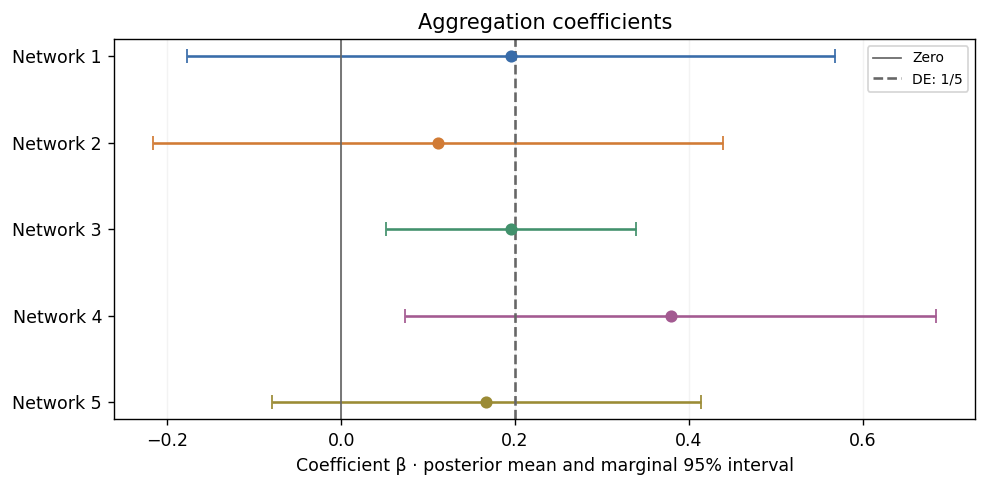
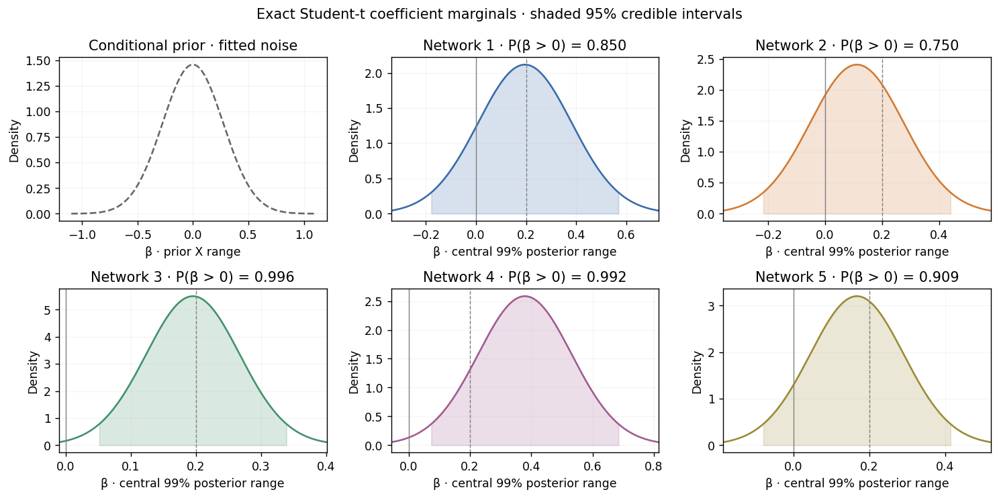
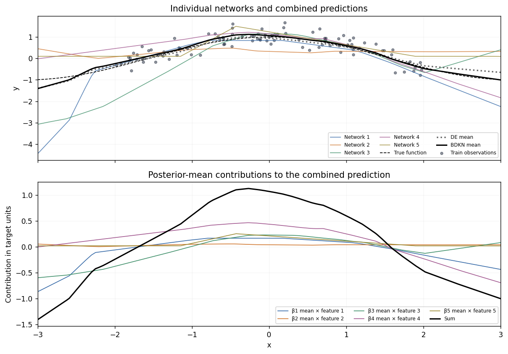
Each density panel uses its own X range for readability; coefficient intervals above share a common axis. Prior reference conditions on fitted noise. Contribution shares use held-out inputs; test targets are used only for scoring.
| Network | β mean | 95% low | 95% high | P(β > 0) | Contribution share | Test RMSE | Test NLL |
|---|---|---|---|---|---|---|---|
| 1 | 0.19546 | -0.17728 | 0.56820 | 0.84966 | 0.24191 | 0.86826 | 0.88493 |
| 2 | 0.11165 | -0.21600 | 0.43930 | 0.74971 | 0.04352 | 0.76716 | 1.27771 |
| 3 | 0.19518 | 0.05157 | 0.33880 | 0.99589 | 0.24285 | 0.95919 | 1.20806 |
| 4 | 0.37919 | 0.07385 | 0.68453 | 0.99227 | 0.37580 | 0.60841 | 0.97174 |
| 5 | 0.16714 | -0.07944 | 0.41372 | 0.90913 | 0.09593 | 0.62933 | 1.22865 |